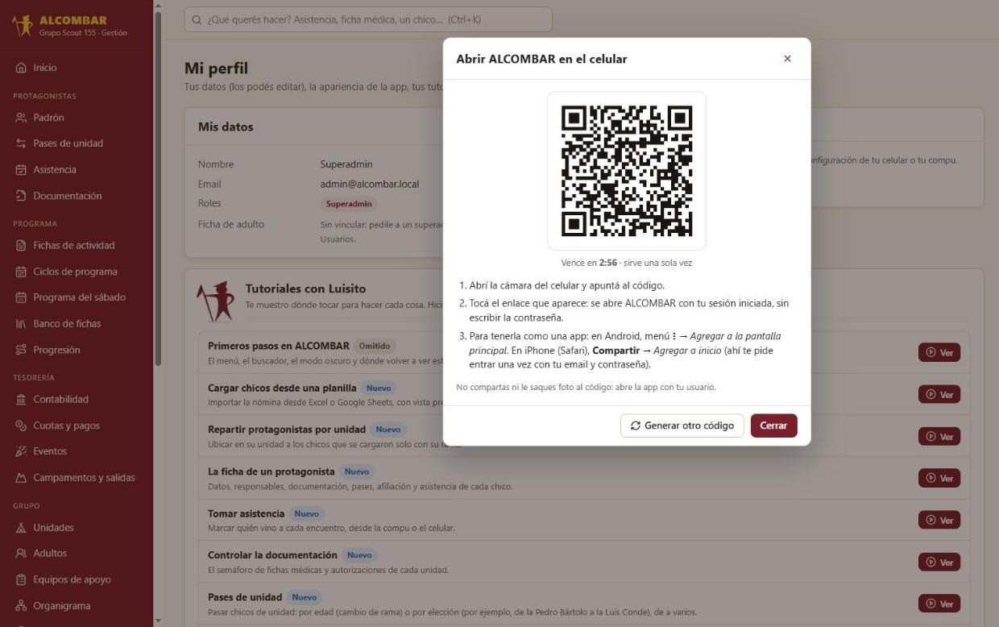
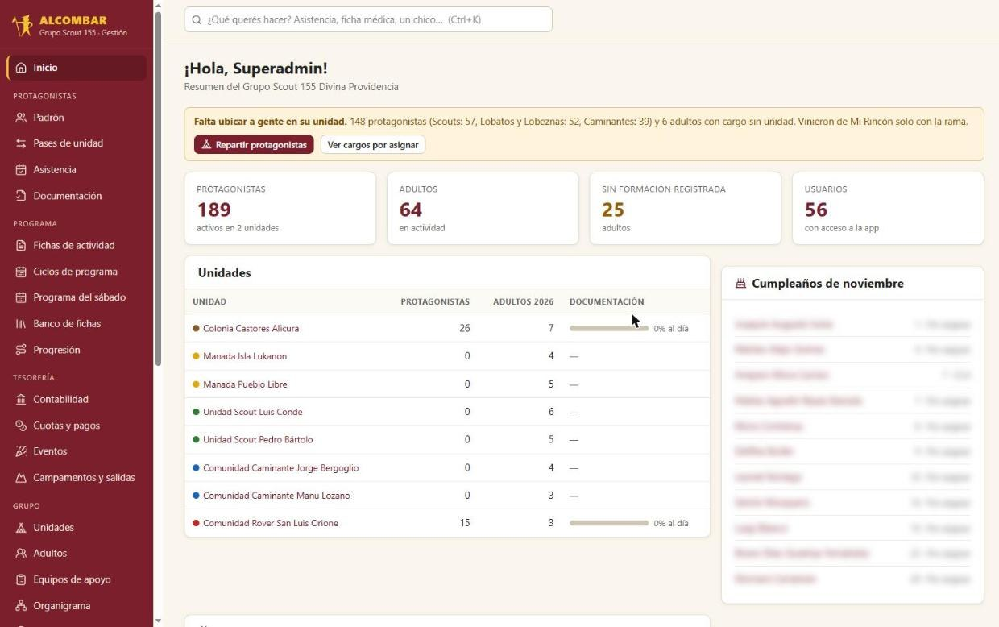
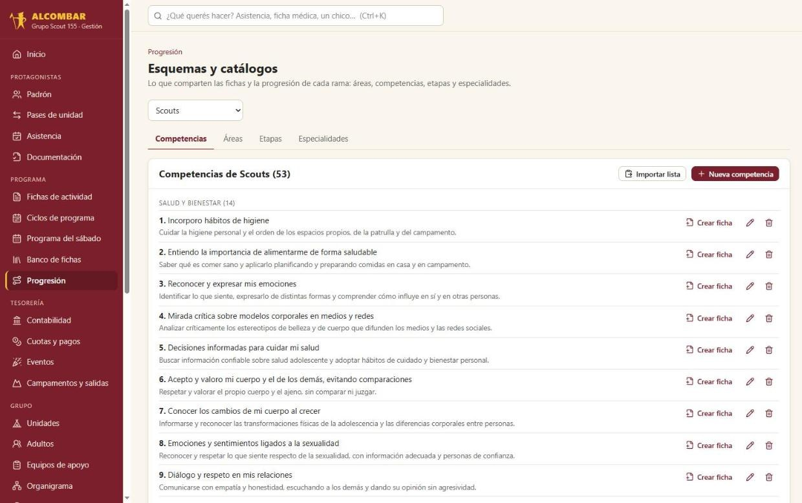

Este manual explica cómo funciona ALCOMBAR Gestión, la app del Grupo para llevar protagonistas, adultos, programa, progresión, tesorería, campamentos e inventario. Cada parte de la app tiene además un tutorial con Luisito.
Qué es ALCOMBAR GestiónPara qué sirve y quién la usa
Cómo entrarInvitación, contraseña, celular y QR
Roles y permisosQué ve y qué puede hacer cada adulto
La pantalla y el menúInicio, buscador, ayuda y modo oscuro
ProtagonistasPadrón, ficha, documentación, asistencia y pases
Unidades y pequeños gruposPatrullas, seisenas y equipos
Adultos y organigramaCargos, formación y equipos
ProgramaFichas, banco, ciclos y programa del sábado
Progresión personalCatálogos por rama, tablero y seguimiento
TesoreríaContabilidad, cuotas, pagos y recibos
Campamentos y eventosInscripción, legajo, logística y rendición
GrupoCalendario, inventario, actas y documentos
Ayuda, Luisito y reportesTutoriales, buscador y reportar problemas
Cuidado de los datosPrivacidad y seguridad
Preguntas frecuentesLo que más se consulta
1
Qué es ALCOMBAR Gestión
Es la aplicación web propia del Grupo Scout 155 Divina Providencia. Junta en un solo lugar la información que antes estaba repartida en planillas, Drives y chats, y define quién puede ver y cargar cada cosa.
Se usa desde el navegador de la compu o del celular, sin instalar nada, y se puede agregar a la pantalla de inicio del celular como una app con el ícono de Luisito.
Protagonistas
Padrón, ficha completa de cada chico, responsables, documentación, asistencia y pases de unidad.
Programa
Fichas de actividad con su circuito de aprobación, banco de fichas, ciclos y programa del sábado.
Progresión
Etapas, competencias y especialidades de cada rama según las guías, con historial de seguimiento.
Tesorería
Caja y cuentas, presupuesto, cuotas, pagos con recibo, becas y rendiciones.
Campamentos y eventos
Inscripción, legajo con semáforo, menú, compras, transporte y rendición.
Grupo
Calendario, inventario y préstamos, actas del Consejo y documentos.
Lo que ya está cargado
Dato
Detalle
189 protagonistas activos
Importados de Mi Rincón. Los que vinieron solo con la rama figuran «por asignar» hasta que se los ubica en su unidad.
65 adultos
Con cargo, unidad, tótem, formación y APF, según las listas del Grupo.
8 unidades
De Castores a Rovers, con su organigrama.
Catálogos de progresión
186 competencias y 130 especialidades de las guías de rama (Rumbo Sur 2026).
39 fichas de actividad
Las fichas 2026 de la Unidad Scout Luis Conde, con su contenido completo.
2
Cómo entrar
La primera vez: la invitación
No hay registro abierto: a cada adulto lo invita un administrador desde Administración → Usuarios. Te llega un mail de ALCOMBAR Gestión con un enlace para elegir tu contraseña. El enlace vence a las 72 horas y sirve una sola vez; si venció, pedí otro.
Abrí el enlace del mail.
Elegí una contraseña de al menos 10 caracteres. Una frase corta es fácil de recordar y segura.
Tocá el ojito del campo para ver lo que escribiste y confirmar que está bien.
Guardá: entrás directo a la app.
Las veces siguientes
Entrás con tu email y tu contraseña. La sesión queda abierta en ese dispositivo hasta 30 días; si tocás Salir, se cierra.
Si te equivocás varias veces. Después de 5 intentos fallidos, el usuario se bloquea 15 minutos para protegerlo. Si no te acordás la contraseña, usá «¿Olvidaste tu contraseña?»: te llega un enlace que vence en 60 minutos.
En el celular, con un código QR
Desde la compu, el botón «Abrir en el celular» (abajo en el menú) o Mi perfil → ALCOMBAR en tu celular muestra un código QR:
Abrí la cámara del celular y apuntá al código.
Tocá el enlace que aparece: se abre ALCOMBAR con tu sesión iniciada, sin escribir la contraseña.
El código sirve una sola vez y vence en 3 minutos. La compu avisa «¡Listo!» cuando lo usaste.

Mi perfil → ALCOMBAR en tu celular: el código QR y los pasos.
Tenerla como una app
En Android, menú ⋮ → Agregar a la pantalla principal. En iPhone (Safari), Compartir → Agregar a inicio; ahí la app te pide entrar una vez con tu email y contraseña. Queda con el ícono de Luisito.
No compartas el código QR ni le saques foto: abre la app con tu usuario.
3
Roles y permisos
Cada adulto tiene uno o más roles. Los roles de alcance Unidad valen solo para la unidad asignada: nadie puede modificar otra unidad.
Rol
Alcance
Qué puede hacer
Superadmin
Todo
Gestiona usuarios, roles, permisos, unidades y catálogos. Ve la auditoría y los reportes de problemas.
Jefatura de Grupo
Grupo
Ve todos los módulos. Edita adultos, unidades, equipos y calendario del Grupo. Aprueba fichas.
Jefe/a de Unidad
Su unidad
Protagonistas, pequeños grupos, documentación, asistencia, fichas (también las aprueba), progresión, campamentos e inventario de su unidad.
Educador/a
Su unidad
Asistencia, documentación, fichas y progresión de su unidad; mueve a los chicos de patrulla. Ve protagonistas de todas las unidades.
Tesorería
Grupo
Caja, cuotas, afiliaciones, presupuesto y rendiciones de eventos y campamentos.
Secretaría
Grupo
Altas y bajas de protagonistas y adultos, afiliaciones, documentación y legajos.
Programa / APF
Grupo
Formación de adultos y asesores personales; ve fichas y progresión.
Intendencia
Grupo
Inventario y préstamos.
Consulta
Grupo
Solo lectura de lo no sensible: organigrama, calendario y documentos.
Roles automáticos por cargo. Cuando a un adulto con usuario se le asigna un cargo en una unidad, recibe el rol que corresponde: los jefes, Jefe/a de Unidad; los subjefes, ayudantes y colaboradores, Educador/a. Un administrador puede sumar o quitar roles desde Administración → Usuarios → Editar, donde se ven los roles que ya tiene.
Lo que no podés ver no aparece en el menú ni en el buscador. Si te falta algo, pedíselo a Jefatura de Grupo.
4
La pantalla y el menú
A la izquierda está el menú, ordenado en Protagonistas, Programa, Tesorería, Grupo y Administración. Abajo están Mi perfil, el botón de modo claro/oscuro, Salir, Abrir en el celular y Reportar un problema. En el celular, el menú se abre con el botón ☰.

Inicio: resumen del Grupo por unidad (los nombres de la captura están difuminados).
Inicio
Resumen: protagonistas y adultos por unidad, documentación al día y cumpleaños del mes.
Aviso de «por asignar»: chicos y cargos que todavía no tienen unidad, con el botón para repartirlos.
Próximas fechas: lo que viene en los próximos 30 días del calendario.
Pendientes: fichas para revisar, préstamos vencidos, bienes en mal estado y pagos vencidos, según tu rol.
El buscador
Arriba de todo. Se abre también con Ctrl + K. Escribí lo que querés hacer, como lo dirías: «ficha médica», «quién vino», «cambiar de patrulla», «cuotas», o el nombre de un chico. Te lleva directo.
Mi perfil
Tus datos (los podés editar), la apariencia, tus tutoriales, la app en el celular y el cambio de contraseña.
5
Protagonistas
Padrón
La lista de chicos, filtrable por unidad, estado y documentación, con buscador. El filtro «Por asignar» muestra a quienes vinieron de Mi Rincón solo con la rama; desde ahí se los ubica en su unidad de a varios. También se pueden cargar chicos desde una planilla (con vista previa) y exportar el padrón.
La ficha de cada protagonista
Todo lo del chico en un solo lugar, en pestañas:
Datos: personales, unidad, pequeño grupo, fechas de ingreso y promesa, datos de salud.
Responsables: madres, padres o tutores, con contacto y quién puede retirarlo.
Documentación: ficha médica, autorización anual de salidas, uso de imagen y autorización de retiro.
Pases y afiliación, Asistencia, Progresión y Pagos.
Documentación con semáforo
Al día · Vence pronto · Vencida · Falta. La pantalla Documentación muestra el estado de toda la unidad para saber a quién pedirle qué.
Asistencia
Se toma por encuentro, desde la compu o el celular: presente, tarde, ausente o justificado.
Pases de unidad
En Pases de unidad: Sugeridos por edad muestra quiénes ya tienen la edad para la rama siguiente; Elegir chicos sirve para pases dentro de la misma rama. Cada pase queda en el historial del chico, con fecha y motivo.
Tutoriales: «Cargar chicos desde una planilla», «Repartir protagonistas por unidad», «La ficha de un protagonista», «Tomar asistencia», «Controlar la documentación» y «Pases de unidad».
6
Unidades y pequeños grupos
En Grupo → Unidades cada unidad muestra sus patrullas, seisenas o equipos, sus protagonistas y sus adultos del año.
Cambiar a un chico de patrulla, seisena o equipo
De a uno: en la tabla de protagonistas, el desplegable de la columna del pequeño grupo lo cambia al instante.
De a varios: marcá las casillas y usá «Mover a…».
Tocar el nombre de una patrulla en su tabla filtra a sus integrantes.
Lo pueden hacer los adultos de esa unidad (jefes, subjefes, ayudantes y colaboradores), en cualquier momento y solo en su unidad. Cada cambio queda en el historial de seguimiento del chico.
Filtros y buscadores
La tabla de protagonistas se filtra por pequeño grupo (o «sin asignar») y se busca por nombre o DNI; la de adultos, por nombre, tótem o cargo.
7
Adultos y organigrama
Adultos: ficha de cada adulto con datos, tótem, cargos por año y unidad, y su usuario.
Formación: cursos y módulos realizados, y su APF (asesor personal de formación).
Equipos de apoyo: los equipos del Grupo y quién integra cada uno.
Organigrama: quién está en cada unidad y en cada equipo, como en el Drive del Grupo.
8
Programa
Fichas de actividad
Cada ficha sigue el formato del Grupo: la actividad (nombre, fecha, lugar, duración, responsable), destinatarios y propósito (área, edades, objetivos y competencias), marco de exploración o simbólico, desarrollo, cierre, otros educadores, materiales y seguridad (obligatoria si es fuera de la sede). Cada una tiene un código, por ejemplo USLC-2026-004.
Borrador→En revisión→Aprobada→Realizada→Evaluada
Enviar a revisión: la ve quien aprueba (Jefatura o el Jefe/a de Unidad), que la aprueba o la devuelve con un comentario.
Si se edita una ficha aprobada, vuelve a borrador.
Después de hacerla: Marcar realizada y Evaluar (qué funcionó, qué cambiar, asistencia).
Imprimir abre la vista para papel o PDF; Duplicar la copia para otra unidad.
Desde la ficha se pueden pedir materiales prestados del inventario.
Una ficha de la USLC cargada en la app, con su competencia vinculada.
Banco de fichas
Todas las fichas aprobadas, realizadas y evaluadas del Grupo, filtrables por rama, área, competencia, tipo y lugar. Con «Usar en mi unidad» se copian como borrador; si es de otra rama, se adaptan las edades.
Ciclos de programa y programa del sábado
Ciclos: diagnóstico, propósitos, las fichas del ciclo y la evaluación con las revisiones de fin de ciclo. Programa del sábado: el cronograma de la reunión por momentos (hora, actividad o ficha, responsable), guardado por fecha e imprimible.
9
Progresión personal
Cada rama tiene su propuesta según las guías de Scouts de Argentina (Plataforma Rumbo Sur, 2026). La app las tiene cargadas en Progresión → Esquemas y catálogos.
Rama
Áreas
Etapas
Compet.
Cómo elige
Castores
Próximamente: se carga cuando se publique la guía de la rama.
Primera a Cuarta etapa (insignias: agua, tierra, aire y fuego)
49
Diario de Marcha
Rovers
6 rutas
Encuentro · Compromiso · Proyección
37
Plan Personal
Las cuatro áreas de las ramas menores son Salud y bienestar, Ambiente, Paz y desarrollo y Habilidades para la vida. Rovers trabaja con seis rutas: Corporalidad, Creatividad, Carácter, Afectividad, Sociabilidad y Espiritualidad. Lobatos y Scouts tienen además 65 especialidades cada una.
Crear una ficha desde una competencia. En el catálogo, cada competencia tiene el botón «Crear ficha»: abre una ficha nueva con esa competencia y su área ya elegidas.

Esquemas y catálogos: competencias de la Rama Scouts con «Crear ficha».
El tablero de la unidad
En Progresión, eligiendo unidad y año: la etapa, la insignia, las competencias por área y la última revisión de cada chico, más los estándares del año. En Scouts: 3 descubiertas, 2 proyectos de unidad y al menos 4 noches de campamento (suman las fichas de campamento y los campamentos realizados).
La progresión de cada chico
Etapas: cuándo empezó cada una, insignia y cierre.
Momentos: ambientación y transición a la rama siguiente.
Competencias: se eligen con la herramienta de la rama y se marcan elegida, en proceso o lograda, con notas y desafíos.
Roles por ciclo, revisiones de fin de ciclo, especialidades y participación en las actividades.
Seguimiento: quién acompaña a cada chico
Abajo de la progresión está la tarjeta Seguimiento. Cualquier adulto de la unidad anota cómo viene el chico (qué charlaron, qué desafío está encarando), y queda un historial de todo lo que se hizo: etapas, competencias, roles, revisiones, especialidades y cambios de patrulla, cada uno con el adulto que lo hizo y la fecha. Arriba se ve quién hizo el seguimiento y cuántas veces. Cada nota la puede borrar solo quien la escribió.
10
Tesorería
Contabilidad
Cuentas: Caja (efectivo), Banco y Mercado Pago, con su saldo.
Movimientos: «Registrar ingreso» o «Registrar gasto» con cuenta, categoría, comprobante y, si corresponde, el evento o campamento. «Transferencia entre cuentas» para mover plata.
Presupuesto anual por categoría, comparado con lo real; se aprueba.
Reportes: caja por período y resultado de cada evento y campamento. Exportar a CSV.
Cierre de mes: un mes cerrado no se modifica; para corregir se anula el movimiento, y queda un contra-asiento con fecha de hoy.
Cuotas y pagos
Plan de cuotas: valor, día de vencimiento, meses que se cobran, afiliación anual y descuento por hermanos.
Generar cuotas: con vista previa, para todos los protagonistas activos con unidad; no se duplican.
Deudores: quién debe y cuánto, lo vencido primero; se imprime.
Becas: descuentos por protagonista, cargados desde su ficha.
Registrar un pago: en la ficha del chico → pestaña Pagos → «Registrar pago». Se aplica a lo que elijas (o a lo más viejo), admite pagos parciales y genera un recibo numerado para imprimir.
Tutoriales: «La contabilidad del Grupo», «Cuotas y pagos» y «Registrar un pago».
11
Campamentos y eventos
Campamentos y salidas
Datos: tipo (campamento, acantonamiento o salida), fechas, lugar, unidades que van, responsable y costo por chico. Queda en borrador hasta que se aprueba.
Inscripción y legajo: se inscribe a todos o a algunos; a cada protagonista se le genera el cargo. El semáforo marca a quién le falta la autorización firmada, el DNI o la ficha médica vigente. El legajo se imprime.
Presupuesto y rendición: lo previsto, los gastos e ingresos (van a la contabilidad) y la rendición final.
Logística: menú, compras, transporte, lo que hay que llevar y los materiales prestados del inventario.
Lugares de acampe: contacto, servicios, costo y calificación de cada vez que se fue.
Las noches de los campamentos realizados suman a los estándares de progresión de la unidad.
Eventos
Fogones, aniversario, rifas: tareas y compras para repartir el trabajo, presupuesto, ingresos y gastos, y la rendición con el resultado. Aparecen solos en el calendario.
12
Grupo
Calendario
Reuniones, Consejos, formación y feriados, por mes o como agenda, filtrables por unidad y tipo. Los campamentos, eventos y actividades fuera de la sede aparecen solos, con el enlace a su pantalla. El botón «Servicio rotativo» reparte las unidades por turno en los sábados de un período, con vista previa.
Inventario y préstamos
Bienes: nombre, categoría, cantidad, estado, ubicación, foto y si es del Grupo o de una unidad.
Préstamos: pedido → autorizado → entregado → devuelto. Al devolver se registra el estado de cada cosa. Los vencidos aparecen en rojo y en Pendientes de Inicio.
Se piden también desde una ficha de actividad o un campamento.
Actas y documentos
Actas del Consejo de Grupo, numeradas por año: asistentes, orden del día y decisiones; se aprueban y se imprimen con firmas. Documentos: reglamentos, planillas, formularios y guías, con su enlace al Drive.
13
Ayuda, Luisito y reportes
Luisito explicando las fichas de actividad (los responsables están difuminados).
30 tutoriales con Luisito: te señala dónde tocar, paso a paso. Se repiten desde Mi perfil → Tutoriales; podés omitirlos cuando quieras.
Ayuda: el índice completo de todo lo que se puede hacer, con buscador.
Reportar un problema: abajo en el menú. Elegís si es un error, una sugerencia o una consulta y contás qué pasó; va con la pantalla en la que estabas. En «Mis reportes» ves la respuesta, que también te llega por mail.
14
Cuidado de los datos
La app guarda datos de menores. Por eso:
Acceso solo por invitación personal. Las contraseñas se guardan cifradas; nadie, ni los administradores, puede verlas.
Permisos por unidad: cada adulto ve y carga lo que le corresponde; los datos de contacto y salud solo los ven quienes los necesitan.
Auditoría: cada alta, cambio y baja queda registrada con quién y cuándo la hizo. Lo que se borra se puede recuperar.
Sesiones que vencen, bloqueo tras intentos fallidos y códigos QR de un solo uso.
Copias de seguridad de la base de datos.
Buenas prácticas: no compartas tu usuario, cerrá la sesión en compus que no son tuyas, y no descargues ni reenvíes listas de chicos por fuera de la app.
15
Preguntas frecuentes
No me llegó la invitación o venció.
Pedile a un administrador que genere otro enlace desde Usuarios. Revisá también la carpeta de spam.
Un chico no aparece en mi unidad.
Puede estar «por asignar»: en el Padrón, filtro «Por asignar», se lo ubica en su unidad.
¿Cómo cambio a un chico de patrulla?
En Grupo → Unidades → tu unidad, con el desplegable de su fila o con «Mover a…».
No veo un módulo o una unidad.
Depende de tu rol. Pedíselo a Jefatura de Grupo.
¿Puedo usarla en el celular?
Sí: con el código QR de «Abrir en el celular» y agregándola a la pantalla de inicio.
Encontré un error o se me ocurrió una mejora.
Usá «Reportar un problema». Cuanto más contás, más fácil es resolverlo.